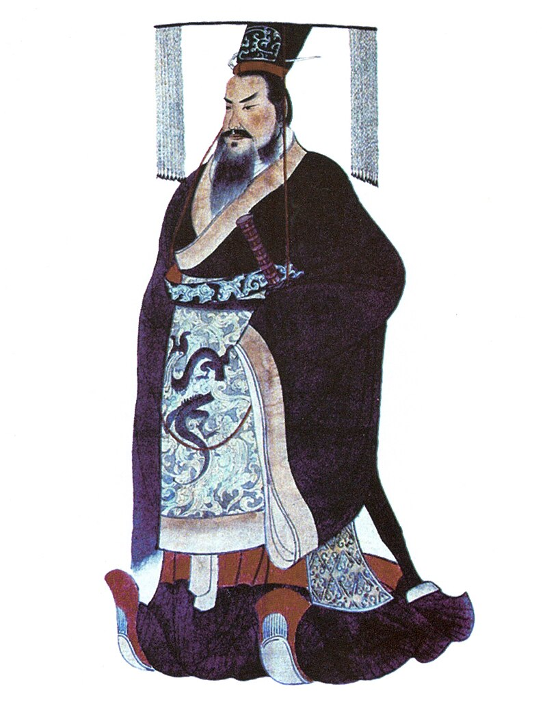

Qin Shi Huang: The First Emperor of China
Qin Shi Huang was a very important emperor in Ancient China who lived a long time ago. He was born more than 2,200 years ago, in 259 BCE. He became the first emperor of China when he was just 13 years old!
Qin Shi Huang is famous for many things, but one of the most exciting things he did was building the Great Wall of China. This enormous wall was built to keep out invaders and protect the people of China. It's so long that it stretches over mountains and deserts!
Emperor Qin also did something really interesting – he unified China. Before he came along, China was made up of different kingdoms, each with its own leader. Qin Shi Huang conquered these kingdoms and made them all part of one big country. He wanted everyone to follow the same rules and use the same money and writing system.
Another cool thing about Qin Shi Huang is the Terracotta Army. He had thousands of clay soldiers and horses made to be buried with him when he died. These sculptures were meant to protect him in the afterlife. Today, people from all over the world visit the Terracotta Army to see these incredible statues.
Even though he did many amazing things, Qin Shi Huang was a bit strict. He wanted to be in control of everything, and he made some tough rules. But his efforts in unifying China and building impressive structures left a lasting impact on the country's history. People still talk about him today!

A Biography: Qin Shi Huang
Qin Shi Huang was an extraordinary leader who lived a long time ago in ancient China. He was born in 259 BCE, which means he lived over 2,000 years ago! Now, let's dive into the fascinating story of this remarkable emperor.
Early Years:
Qin Shi Huang wasn't always an emperor. He was born into a royal family, and his name was originally Ying Zheng. When he was just 13 years old, he became the King of Qin, one of the many states in ancient China. Little did anyone know, this young king would one day become the first emperor of all China!
The First Emperor:
When Ying Zheng was 22 years old, he had big dreams. He wanted to unite all the different states in China and create one powerful empire. After years of battles and clever strategies, he finally succeeded in 221 BCE. That's when he changed his name to Qin Shi Huang, meaning "First Emperor of Qin."
The Great Wall of China:
Qin Shi Huang is most famous for building the Great Wall of China. It wasn't just a regular wall; it was an enormous structure made of stone, earth, and wood. Why did he build it? Well, he wanted to protect his empire from invaders and keep his people safe. The Great Wall stretches for thousands of miles and is still standing today as a symbol of China's rich history!
Terracotta Army:
But that's not all - Qin Shi Huang had another impressive project. He wanted to be protected even in the afterlife! So, he ordered the creation of a massive army made of terracotta soldiers and horses. These life-sized statues were buried with him in his tomb, ready to guard him forever.
Legacy:
Qin Shi Huang's achievements were incredible, but being a powerful leader also had its challenges. Some people didn't agree with his strict rules, and his reign wasn't always peaceful. However, he left a lasting legacy by uniting China and laying the foundation for the country we know today.
Even though Qin Shi Huang lived a long time ago, his impact on China is still felt today. The Great Wall and the terracotta army are reminders of his vision and determination. So, the next time you see a picture of the Great Wall, remember the amazing emperor who made it all possible - Qin Shi Huang!
Fun Facts
Terracotta Army: Qin Shi Huang is famous for the discovery of the Terracotta Army, an army of life-sized clay soldiers buried with him to protect him in the afterlife.
Unifying China: He is known for unifying China for the first time in its history, standardizing laws, currency, and writing systems.
The Great Wall: Although the idea of the Great Wall existed before him, Qin Shi Huang is credited with connecting and expanding it into the Great Wall we know today.
Timeline
259 BCE Qin Shi Huang was born as Ying Zheng in the state of Qin.
246 BCE He became the King of Qin at the age of 13 after his father's death.
221 BCE Qin Shi Huang defeated the last rival states and declared himself the First Emperor of China.
214 BCE Construction of the Great Wall began.
210 BCE The Terracotta Army was created.
210 BCE Qin Shi Huang died under mysterious circumstances, possibly due to mercury poisoning from drinking an "elixir of immortality."
Impact on the World
He standardized weights, measures, and writing systems, making trade and communication easier.
He built the foundation for the Great Wall of China, which would later become a symbol of China.
He Left behind the impressive Terracotta Army, offering a glimpse into ancient Chinese art and culture.
Reference Books for Elementary Students:
"Qin Shi Huang: First Emperor of China" by Christine Taylor-Butler
This book provides a concise and accessible overview of Qin Shi Huang's life and achievements, tailored for young readers.
"The Terracotta Army of Emperor Qin" by Nathaniel Harris
This book explores the discovery of the Terracotta Army and its significance, with colorful illustrations.
"You Wouldn't Want to Work on the Great Wall of China!: Defenses You'd Rather Not Build" by Jacqueline Morley
Although not solely about Qin Shi Huang, this book offers an engaging look at the construction of the Great Wall during his time, suitable for elementary students.
"The Great Wall of China" by Leonard Everett Fisher
This book not only covers the Great Wall but also mentions Qin Shi Huang's role in its early development.
These books should provide elementary students with an understanding of Qin Shi Huang and his impact on China and the world in an engaging and age-appropriate way.